Dragon Ball New Age • test jakości postaci
Galeria grafik — 13 wojowników
Nowe wektorowe ilustracje do gry. Tutaj zobaczysz postacie bez filtrów i bez rozmywania tła. Są ostrzejsze od poprzednich klocków, ale nie są ręcznie narysowanymi klatkami animacji ani gotowym serialowym 4K.
▶ Wejdź do gry 4K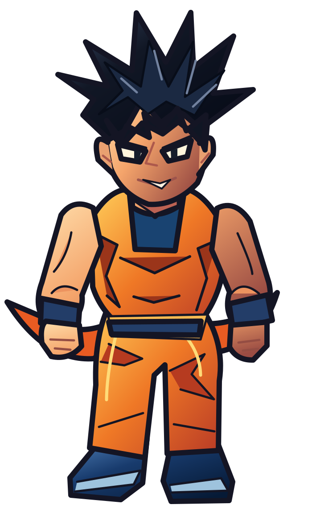
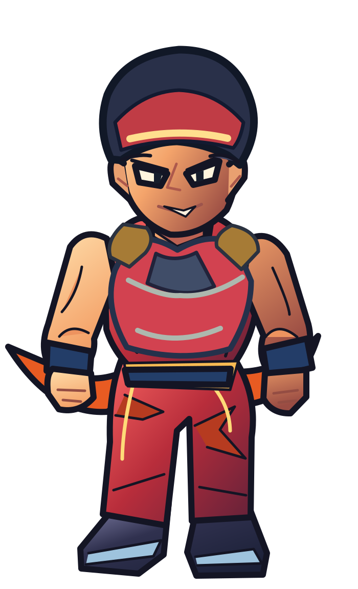
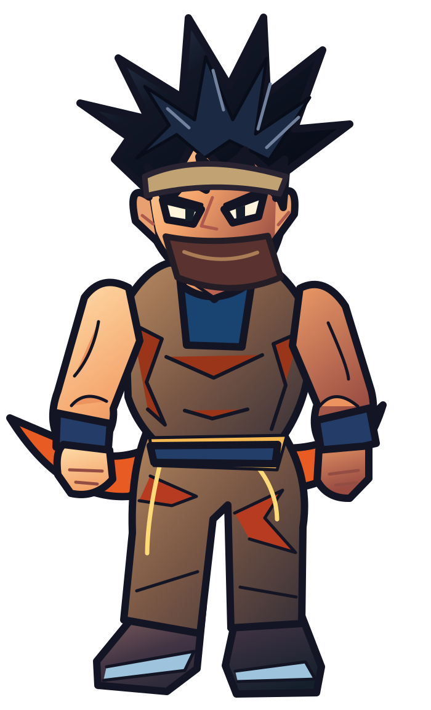
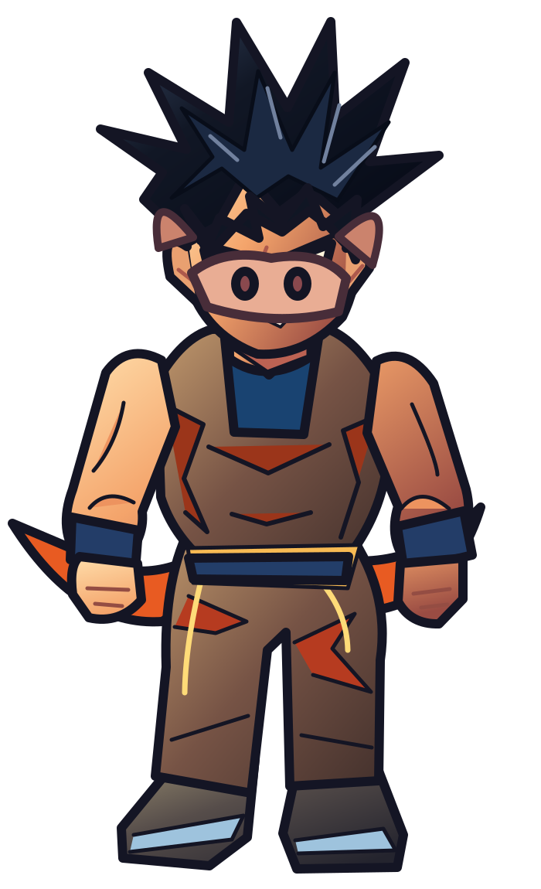
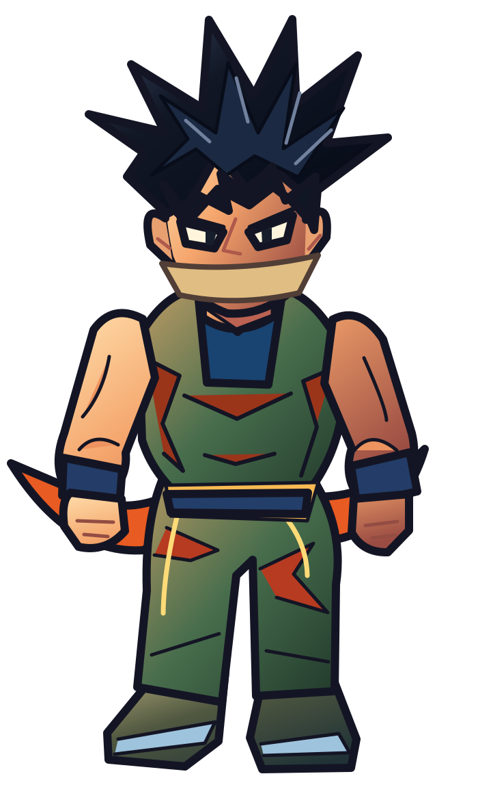
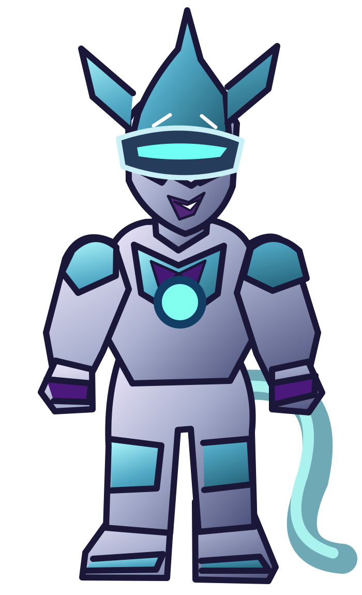
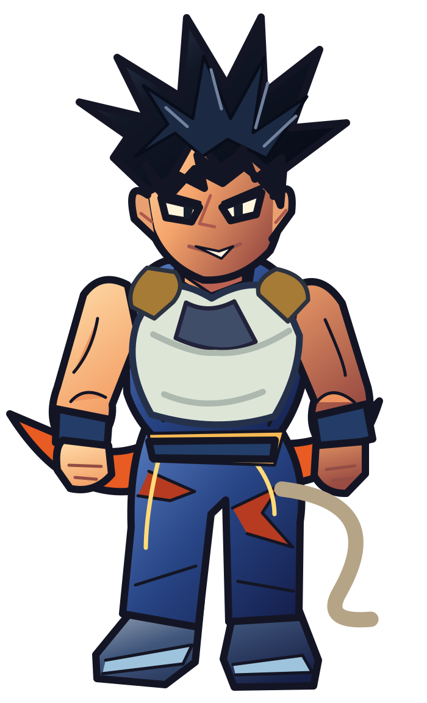
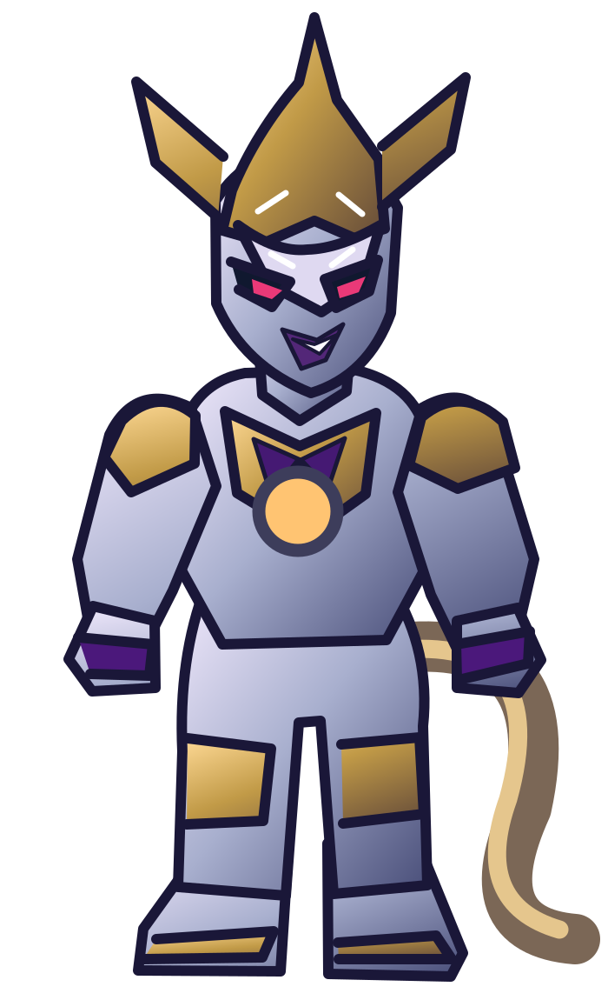
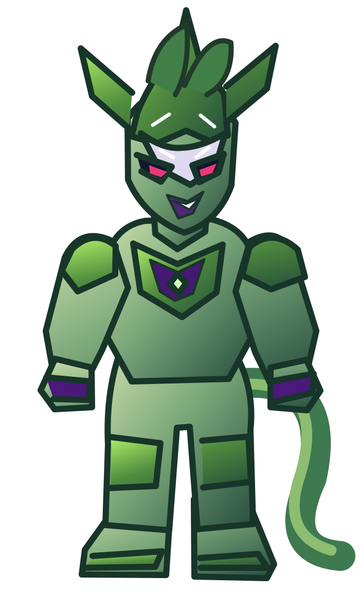
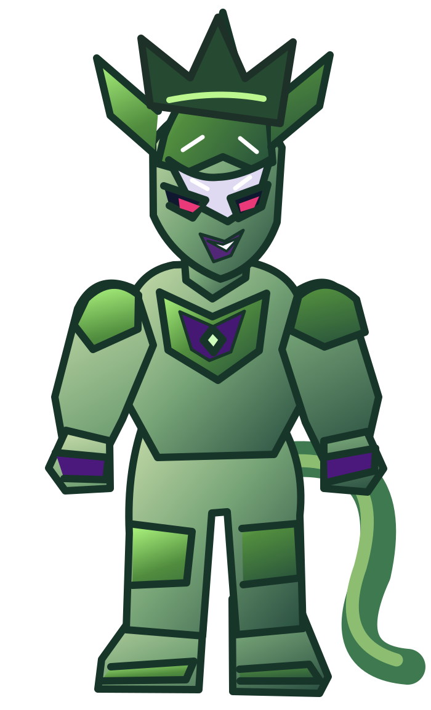
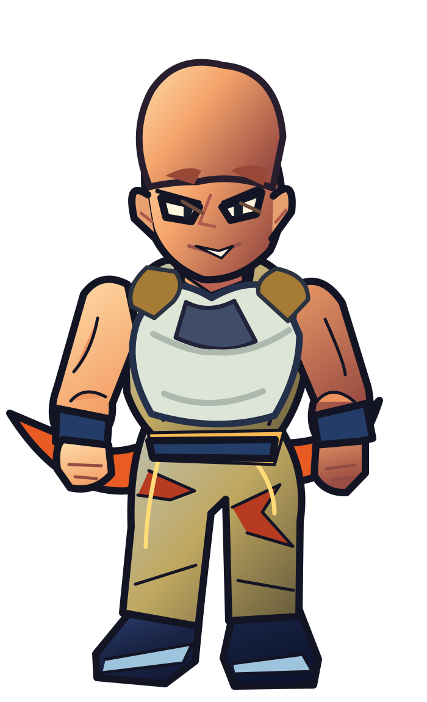
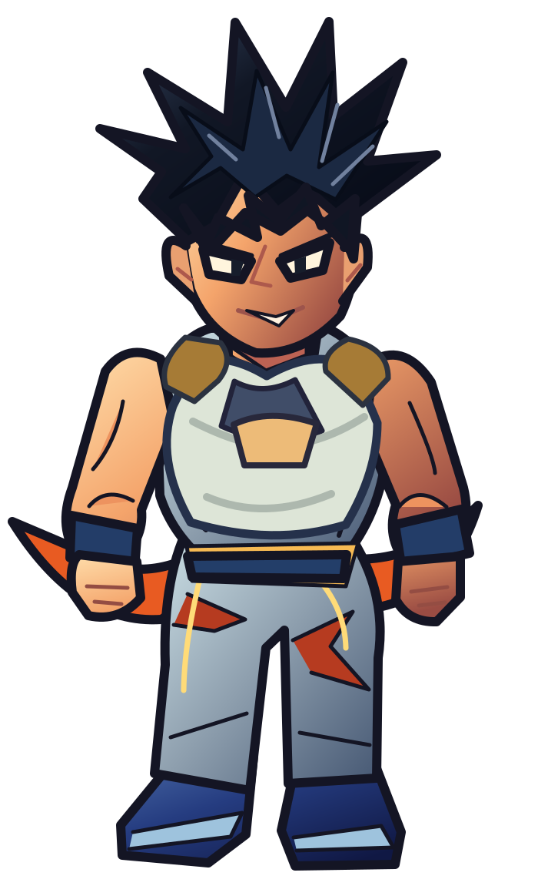
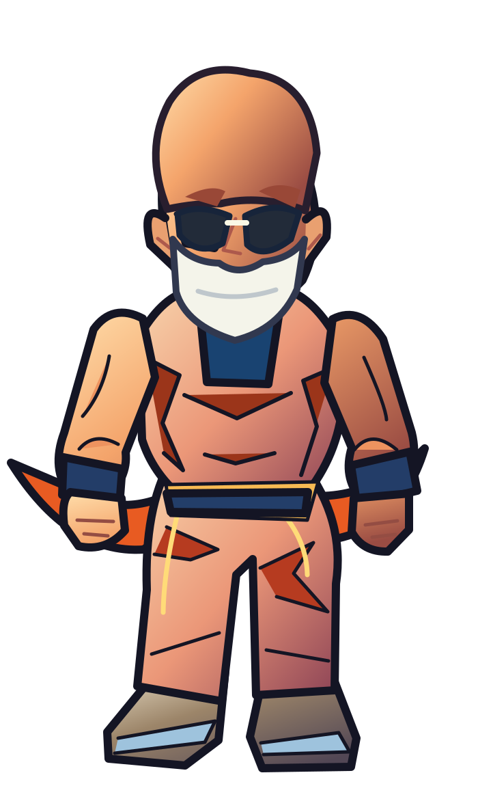